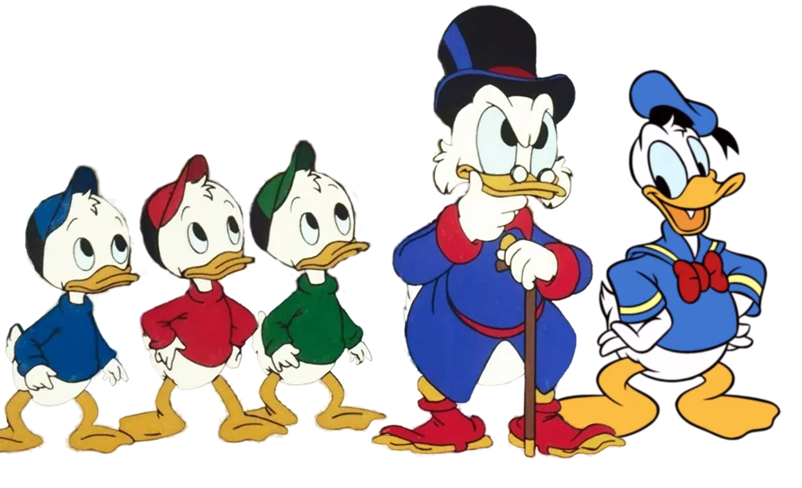
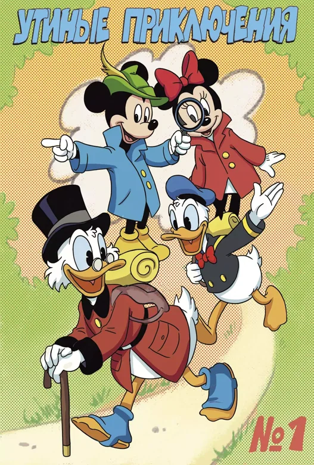
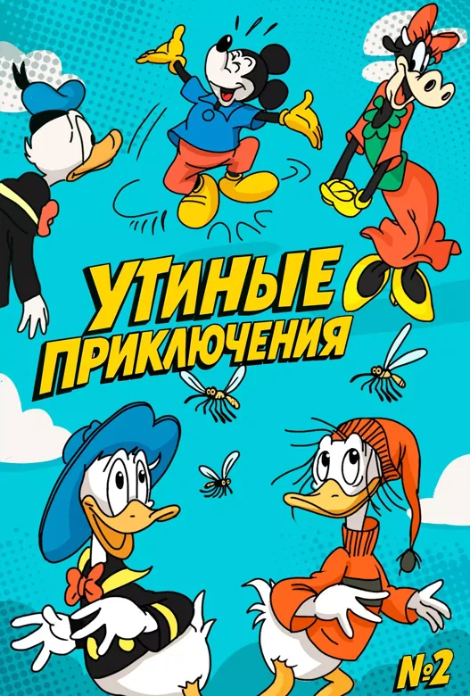
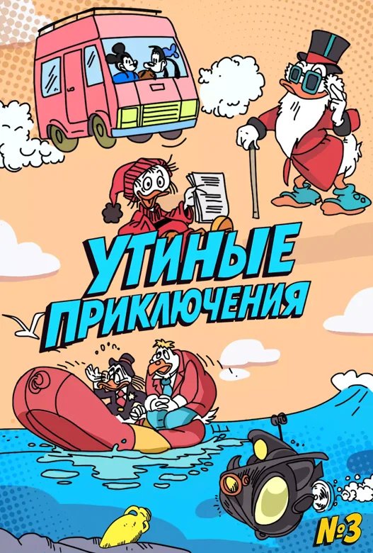

Утиные приключения
Дональд, Скрудж и племянники снова вместе. Выберите выпуск из коллекции.
Выбрать комиксВыпуски

Утиные приключения № 1
Три истории на 131 странице.

Утиные приключения № 2
Пять историй на 104 страницах.

Утиные приключения № 3
Четыре истории на 102 страницах.